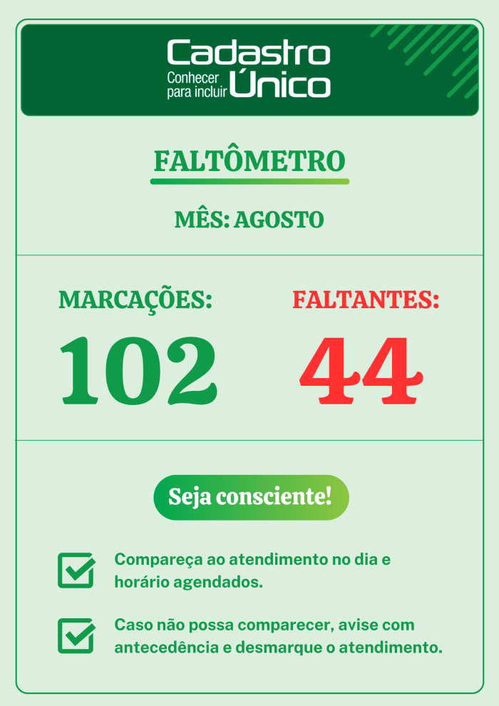
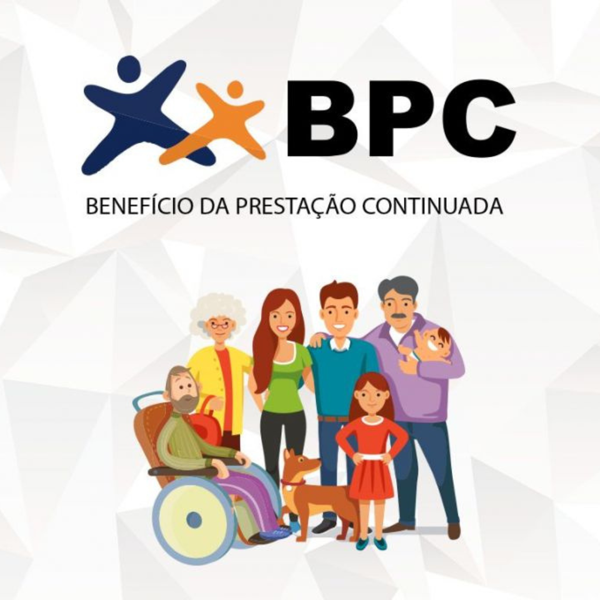

Excelentíssimo Senhor Prefeito Leonardo de Carvalho
Com o objetivo de garantir a continuidade e a eficiência das atividades do setor de Cadastro Único no município de Glorinha, apresentamos as principais ações realizadas e os avanços alcançados durante a atual gestão, bem como as necessidades e os próximos passos recomendados para aprimorar o atendimento aos beneficiários.
Sobre o Cadastro Único
O Cadastro Único é um instrumento essencial para a identificação e caracterização socioeconômica das
famílias brasileiras com renda mensal igual ou inferior a meio salário mínimo por pessoa ou renda
familiar mensal de até três salários mínimos. Famílias com renda superior podem ser cadastradas se
houver vínculo com a seleção de programas sociais implementados em nível federal, estadual ou
municipal. Este sistema é utilizado para a seleção de beneficiários e a integração de programas
sociais do Governo Federal, tais como o Programa Bolsa Família, Minha Casa Minha Vida, Tarifa Social
de Energia Elétrica, Benefício de Prestação Continuada (BPC) e o Programa de Erradicação do Trabalho
Infantil (PETI), entre outros.
Busca Ativa - Cadastro Único
Importância do acompanhamento das famílias através do Cadastro Único
Apresentação
O Setor de Cadastro Único municipal, sob minha gestão desde 02 de maio de 2024, tem passado por
significativas melhorias visando a eficiência no atendimento e a garantia dos direitos da
população de baixa renda.
Equipe Atual
Atualmente, a equipe do Cadastro Único é composta por:
Simone Penido
Graduada em Administração (2012), Técnico Contábil (2016), Análise e
Desenvolvimento
de Sistemas(2024).
Jamilly Rocha da Silva
Graduação 1º Semestre em Contabilidade
Micaely Munhais
Graduação em Design Gráfico (2024)
Sarah Gonçalves
Graduação 2º Semestre em Administração
Simone Penido - Coordenadora
Servidora no município desde janeiro de 2016, quando assumi o cargo
de agente administrativa como primeira colocada do concurso público de 2014. Em Glorinha
trabalhei nos departamentos de Recursos Humanos, Atos Oficiais e atualmente como
Coordenadora/Diretora do Setor de
Cadastro Único, junto ao CRAS. Atuo no setor do CAD desde março de 2018, inciando como
entrevistadora e passando ao novo cargo desde maio deste ano. Minha graduação iciaial foi
administração, após realizei um curso técnico em contabilidade e atualmente estou cursando o
último semestre de
análise e desenvolvimento de sistemas e no primeiro período da graduação em engenharia de
software.
TI.
Jamilly Rocha da Silva - Assessora Administrativa
Iniciou como Estagiária no CRAS em agosto de 2021 até outubro de 2022, atuando como
recepcionista e auxiliando em tarefas administrativas, quanto se tornou asessora administrativa
como cargo em comissão. Neste período, atuou junto FGTAS-SINE municipal, realizando atendimento
ao público, encaminhamento de seguro-desemprego e intermediação de mão de obra e também
encaminhamento de documentação para emissão da Carteira de Identidade. Também teve uma breve
passagem pelo setor de Cadastro Único, onde atuou como entrevistadora e adquiriu conhecimento
sobre o sistema CadÚnico.
Micaely Munhais - Assessora Administrativa
Inicou como estagiária novembro de 2022, até fevereiro de 2024, quanto foi nomeada asessora
administrativa como cargo em comissão. Como estagiária atuou na recepção do CRAS e como suporte
administrativo no setor de compras da SMCDS. No setor do CAD, atua como entrevistadora do
Cadastro Único desde abril de 2024. Devido a formação como Designer Gráfico, também atua na
criação de material informativo para o setor.
Sarah Gonçalves - Estagiária
Iniciou como estagiária em abril de 2024 junto ao FGTAS-SINE, realizando atendimento ao público
e suporte administrativo. No setor do CAD desde maio de 2024, atua como entrevistadora e
digitadora, auxliando nas tarefas administrativas do setor e colaborando com o atendimento das
famílias público do PBF. Atualmente cursa o segundo semestre de Administração.
Todas atuamos nós atuamos também como recepcionistas, recebendo e atendendo os munícipes
fornecendo informações básicas sobre os serviços oferecidos pelo CRAS, auxiliando na organização
e triagem de documentos para facilitar o encaminhamento das pessoas para o atendimento da equipe
técnica, e também realizando o gerenciamento da agenda e marcação de atendimentos.
Principais Mudanças Realizadas:
Horários de Agendamento
Para facilitar o acesso ao serviço, foram criadas 11 opções de
horários de agendamento diaário, atendendo melhor à demanda crescente. Além disso,
novos canais de
agendamento foram implementados, como o WhatsApp corporativo utilizando o número do
telefone fixo do CRAS (51 3487-1486), facilitando o acesso e proporcionando maior
comodidade ao
público. Os agendamentos presenciais e por telefone foram otimizados, enquanto
encaixes indicados pela equipe técnica garantem flexibilidade em casos emergenciais.
Também confecionamos mini folders com a lista de documentos necessários para
inclusão e atualização cadastral, para facilitar o acesso à informação, e no verso
consta um espação para anotação da data e horário do atendimento com telefone de
contato caso o responsável precise reagendar o comparecimento.
Busca Ativa e Visitas Domiciliares
Com foco na inclusão social, foram implementadas visitas
domiciliares para verificar in loco as condições de residência e composição
familiar. Essa prática visa garantir a qualidade e a confiabilidade das informações
cadastradas, buscando atender à exigência do Governo Federal de realizar ao menos
20% dos cadastros presencialmente. Devido a políticas anteriores, quando as
entrevistas do CAD eram acompanhadas por uma técnica do serviço de acolhimento,
houve a indicação do MDS que as profissionais que atendem no Serviço de Proteção
Social Básica não participem de averiguações cadastrais, pois há o conflito em
relação a possibilidade de quebra de vínculo das famílias atendidas. A
antiga gestão do CAD, desde a pandemia, não estava realizando visitas
domiciliares devido a essas divergências. Porém as atualizações em domicílio
permitem alcançar famílias em situação de vulnerabilidade que, de outra forma, não
seriam atendidas.
Solicitação de Reativação de Instâncias de Governança:
Para fortalecer a intersetorialidade, foi solicitada a
reativação do Grupo Gestor Municipal, composto por representantes dos setores de
Desenvolvimento Social, Saúde e Educação. A articulação entre esses setores é
fundamental para integrar esforços e otimizar os serviços oferecidos. Além disso,
foi solicitado ao prefeito a nomeação de novos integrantes para a Instância de
Controle Social do Programa Bolsa Família (ICS - PBF) para reativar esta instância
de governança, para que possamos promover reuniões
periódicas para análise de estratégias e resultados. Como próximas ações
solicitaremos agendamento de reuniões com coordenadores do CAD de outros municípios
como Santo Antônio da Patrulha e Gravataí, para troca de experiências, informações e
práticas de boa gestão do CadUnico e PBF. Com estas ações poderemos retornar as
reuniões informativas com as famílias, promovendo concientização sobre as
condicionalidades do PBF, orientação sobre o uso conciente do benefício para
melhorar a qualidade de vida das famílias, entre outras ações para fortalecimento do
vínculo comunitário.
Diminuição do Tempo de Processamento
Aumento na Composição da Equipe: A atual secretária da pasta,
Silvana, tendo pleno entendimento da importância do setor do CAD na manutenção do
acesso da população aos benefícios do Governo Federal através da base de dados do
Cadastro Único, quando me nomeou para gerir o setor, também aumentou a equipe para
três pessoas (anteriormente eramos eu Simone, como entrevistadora e Maria Sirlei,
como diretora/coordenadora). Com a chegada da estagiária Sarah, conseguimos aumentar
significativamente a capacidade de atendimento. Além disso, todas as solicitações de
treinamento para a nova equipe foram prontamente atendidas pela Secretária.
Alteração na Política de Exclusão de Pessoas da Composição
Familiar
Com o objetivo de aprimorar a precisão das informações no
Cadastro Único, foi implementada a prática de visitas domiciliares quando a/o
responsável pela unidade familiar (RUF) vem ao CRAS solicitar a exclusão de algum
morador da residência. Essa medida
permite confirmar as condições de residência e composição familiar diretamente no
local, garantindo que as informações fornecidas pelos beneficiários do Programa
Bolsa Família (PBF) estejam alinhadas com a realidade, evitando fraudes e
inconsistências. Essa medida faz parte do plano de ação do Governo Federal como uma
das medidas de acompanhamento do Cadastro Único para Programas Sociais do Governo
Federal (CadÚnico).
Capacitação e Supervisão
Capacitação inicial das servidoras Micaely Munhais e Sarah
Gonçalves para entrevistas do Cadastro Único, com supervisão até adquirirem
segurança para atuar autonomamente. Para assegurar a qualidade no atendimento, as
servidoras Micaely Munhais e Sarah Gonçalves passaram por capacitação intensiva na
reaização de cursos, focada nas etapas de entrevistas e preenchimento de cadastros.
Durante o período de supervisão, foram monitoradas para garantir segurança e
autonomia na execução de suas funções. Esse investimento em treinamento foi
essencial para elevar o padrão de atendimento e eficiência do setor.
Criação de Material Informativo:
Elaboração do "Faltômetro": Cartaz para conscientizar os usuários sobre a
importância de comparecer aos agendamentos do Cadastro Único.
Produção de Cartazes e Mini Folders: Com os canais de denúncia do Governo
Federal, para conscientizar sobre irregularidades no recebimento do benefício.

Mutirões de Atualização Cadastral:
Para o público do Programa Bolsa Família (PBF) com cadastro desatualizado há mais de 24 meses,
foram organizados mutirões para garantir a atualização cadastral. Como parte do processo, listas
com os contatos das responsáveis pelas unidades familiares foram elaboradas e utilizadas para:
Contato Telefônico e WhatsApp Institucional: As responsáveis foram informadas sobre a
importância da atualização cadastral, tanto por meio de ligações telefônicas quanto pelo
WhatsApp institucional.
Envio de Informações: Durante esses contatos, foi encaminhada uma lista detalhada dos
documentos necessários para a atualização cadastral.
Verificação Periódica: Realizamos verificações periódicas para garantir que todos os passos
foram cumpridos e que as informações estejam atualizadas.

Capacitação da Equipe
→ Curso sobre Cadastro Único - Módulo Expert
○ (Entrevista, Cad Avançado, CECAD e IGDPBF - DPM Educação): Participação de Micaely Munhais e
Sarah Gonçalves, realizado nos dias 29 e 30 de julho de 2024, na Sala Larisa do Master Express
Grande Hotel, em Porto Alegre. Custo total: R$ 1.258,00 (inscrições) + despesas operacionais de
deslocamento.
→ Curso sobre Operacionalização Básica do Cadastro Único
○ Passo a Passo da Visita Domiciliar: Participação de Simone Penido e Micaely Munhais, realizado
nos dias 25 e 26 de abril de 2024, na Sala Oscar Breno Stahnke, da DPM Educação, em Porto
Alegre. Custo total: R$ 1.258,00 (inscrições).
+ despesas operacionais de deslocamento.
→ Capacitação Operação do Sistema de Cadastro Único 2024 (CadÚnico)
○ Passo a Passo da Visita Domiciliar: Participação de Simone Penido e Micaely Munhais, realizado
nos dias 25 e 26 de abril de 2024, na Sala Oscar Breno Stahnke, da DPM Educação, em Porto
Alegre. Custo total: R$ 1.258,00 (inscrições).
+ despesas operacionais de deslocamento.
→ Curso autoinstrucional Microsoft Excel Básico
○ Com carga horária de 15 horas, pela Fundação Bradesco EAD, realizado por Micaely Munhais e Sarah
Gonçalves para capacitação em manipulação de dados do Cadastro Único e Programa Bolsa Família.
→ Curso EAD plataforma 1Doc - Módulos Essenciais
○ Participação de Simone Penido, Jamilly Rocha da Silva, Micaely Munhais e Sarah Gonçalves, para
capacitação na operacionalização do sistema de Protocolo Eletrônico vigente no município
→ Capacitação Assistente Administrativo
○ Realizada por Jamilly Rocha da Silva, com aproveitamento de 75,67% e duração de 200 horas, no
Instituto Federal de Educação, Ciência e Tecnologia do Rio Grande do Sul, de 14 de junho de 2024
a 16 de julho de 2024.
→ Treinamento FGTAS/SINE-RS
○ Jamilly Rocha da Silva participou de capacitação sobre Intermediação de Mão de Obra e
Seguro-desemprego, com certificado emitido em 31 de março de 2023 (35 horas).
Desde de que assumi como coordenadora/diretora do setor, tenho trabalhado para fortalecer a equipe e
garantir a eficiência e
qualidade dos serviços prestados à população. A equipe atual demonstra um elevado nível de
competência e comprometimento, garantindo que o setor funcione de forma eficiente e autônoma.
Substituir os integrantes neste momento poderá causar:
○ Perda de continuidade operacional: Tempo será necessário para treinar novos colaboradores,
gerando possíveis atrasos e inconsistências nos serviços.
○ Custo adicional: Novas capacitações representarão custos adicionais para o município.
○ Impacto no atendimento: A falta de experiência inicial de novos integrantes pode afetar a
qualidade e a agilidade no atendimento.
Considerando os resultados alcançados e o alinhamento das competências da equipe com as demandas do
setor, recomendo fortemente a manutenção das servidoras Micaely Munhais, Sarah Gonçalves e Jamilly
Rocha da Silva. Tal decisão garantirá a continuidade dos avanços e o bom desempenho do Cadastro
Único no período de transição administrativa.
Conclusão
O setor de Cadastro Único é essencial para garantir que os cidadãos de Glorinha tenham acesso aos
benefícios sociais e auxílios necessários. A continuidade e estabilidade da equipe são fundamentais
para assegurar a manutenção da qualidade e da eficiência dos serviços prestados. Reforço a
importância de manter os avanços conquistados e contamos com sua compreensão e apoio.